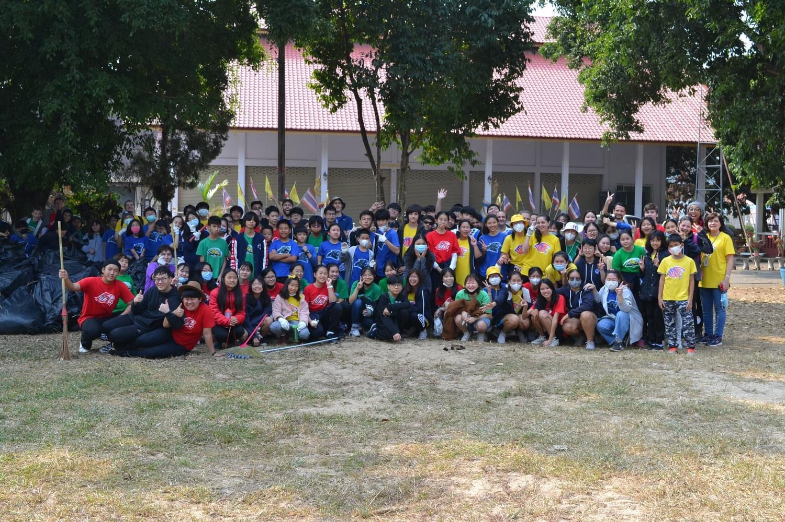

I had several opportunities to volunteer for different community service in school, and some outside school. I had an opportunity to help wrap up the Christmas gift box as a service team in out school for young children, I taught several young local students English, and I participated in community clean up service as a school member. In the future, I want to have more opportunities to participate in more community service, for example capstone projects.
